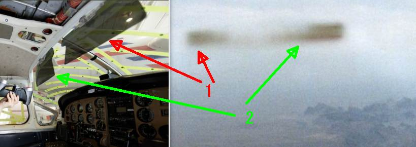

1985-09-09, California : セスナから撮影した葉巻型 UFO の正体
要約
正体の図解

元の写真

初出
1985-09-09, California : セスナから撮影した葉巻型 UFO （→ その正体は…） （全体） (2020-05-12) UFO
詳細
更新
（2020-05-12）完成 （2020-05-07）追加 （2020-05-01） ・この事件は、7年前の 2013-05-15 の過去記事（下に添付）で取り上げたが、本日、この事件に関するより詳しいソース記事を見かけたので追加。 ・ついでに、この UFO の正体が判明したので忘れない内に記録。2013-05-15 の過去記事
（以下、2020-05-01 追加分）1985年9月9日、モハーベ砂漠上空：セスナ機のパイロットが撮影した葉巻型 UFO
・日時：1985年9月9日 ・場所：モハーベ砂漠上空（the Mojave Desert） ・撮影者：David HastingsThis cigar-shaped UFO was photographed by general aviation pilot David Hastings as he piloted a Cessna Skymaster plane over the Mojave Desert on Sept. 9, 1985. There has never been an indication of hoax in this case, which remains unexplained to this day.http://www.huffingtonpost.com/2012/08/03/roswell-ufo-crash_n_1715663.html前置
・上の 7年前のソース記事は極めて短かったが、今回のソース記事（下）は詳細。なので追加する価値がある。 ・今回のソース記事を見て、改めて問題の UFO 写真を眺めたところ、この UFO の正体が判明した。つまり、この UFO の正体が具体的に特定できた。その証拠となる映像も見つけたので、忘れない内に記録（*1）。 ・よって、ソース記事のNo hoax was ever determined in this case, which remains unexplained to this day.という記述は、事件から 34年が経過した今日で有効期限が切れた（と私は信じる）。引用
SEPTEMBER 9, 1985……MOJAVE DESERT CALIFORNIA
One incident involved David Hastings, a British pilot pictured to the left, who, along with his co-pilot, David Paterson, was flying a Cessna Skymaster plane over the Mojave Desert in America on Sept. 9, 1985. “We were sitting there enjoying the sunshine when we both suddenly saw this speck out on the horizon at our 12 o’clock position,” Hastings told HuffPost. “This speck suddenly grew extremely quickly until we saw this huge shadow go over the top of us,” he recounted. “But the most amazing thing about it was there was no noise and absolutely no movement or turbulence at all. We looked at each other, saying, ‘What the hell was that?'” At that point, both pilots felt that something was in the air off the port (left) side of their plane, but they couldn’t see anything there. They agreed that they were able to sense something moving outside. Hastings walked to the back of the plane, grabbed his camera and returned to the cockpit where he snapped two pictures out the window. All he was able to see in the camera viewfinder was the left wing of the plane and the ground below. UFO Photograph It was only after they returned to San Francisco and got the pictures developed that they knew they’d encountered something extraordinary. “One picture showed what we expected to see ? the aircraft wing and the ground,” said Hastings. “But in the second one, there was this [cigar-shaped] thing. We were both convinced that it was not a manmade object. “Several pilots have seen UFOs in England, so it didn’t surprise me, but I was surprised that we actually got a picture of it.” Hastings recalls that, although he wasn’t frightened by the object, he was mostly concerned about the initial encounter with it and the possibility of a mid-air collision. No hoax was ever determined in this case, which remains unexplained to this day. Why do aviation officials avoid talking about UFOs? In the UK, Clarke suggests it’s something that could result in bad publicity. “Don’t forget, this is a commercial operation and the aircrew are very reluctant to file a report because the airline companies don’t want them answering questions about things that aren’t part of the corporate image.” ref: PILOTS ALIEN CRAFT PHOTO OVER THE MOJAVE DESERT | WORLD UFO PHOTOS AND NEWS ******* WORLDS LARGEST UFO NEWS WEB SITE WITH OVER 2,800 UFO CASE FILES AND MORE… - http://worldufophotosandnews.org/?p=26017
この UFO の正体
注目箇所
・以下の疑問に注目。 ・(a) なぜ、葉巻型 UFO の中央部が薄れて（or 消えて）いるのか？ ・(b)UFO の両端から斜め下に薄く白い煙（ or ハロー or プラズマ）のようなものが放射されているが、それは何か？ ・この 2つが正体解明のヒントになった。 ・今回、この UFO 写真を眺めてから、正体に勘づき、その裏付け証拠となる画像をネットで見つけるまでに 2時間を要した。上のヒントもあるので、本気を出せば誰でも 30分もあれば正体に気づく筈。連休で暇な人はチャレンジされたい。図解
… … … …証拠画像
… … … …（*1）
・実際、「あぁ、わかった。そういうことだったのか。」と納得したことでも、すぐ忘れてしまうのをこの Blog で何度も経験した。なにやら abductee/NDE の真理忘却現象に似ているが、私の場合は既にボケかけているだけのようだ。まだ若いのに…w。 (2020-05-01)
(以下、2020-05-07 追加分)前置
・5月の連休も終わったので、大甘のヒント画像を追加。上のふたつのヒントではまだ気づかなかった人も、これで正体に気づく筈。「な～んだ、これかよ」と。 ・正体の解説は次回に。ヒント画像
・ヒントと言うより、ほとんど回答そのものだが…w ・ヒントその1・ヒントその2 ・ヒントその3
ref: NRC Canada on Twitter: "#NRCAero is converting a Cessna 337 to a hybrid-electric powertrain to better understand the safety and technical issues innovators and regulators could face as they seek to make aviation more #sustainable. Learn more about #NRCAero research: https://t.co/0EMPLGYPEp #Globe2020" / Twitter - https://twitter.com/NRC_CNRC/status/1227283529614028802/photo/1(2020-05-07)
(以下、2020-05-12 追加分)前置
・たぶん、大概の人は上のヒント写真で正体が分かった筈なので、いまさら正体明かしの解説など野暮なだけだとは思うが、「あれこれ考えるなんて面倒。さっさと正体を明かせ！」という人も中にはいると思うので簡単に説明してこの件を終わりとする。この UFO の正体
・結論を先に。この UFO の正体は「日差し遮蔽板」（サン・バイザー：sun visor）。 ・飛行機の操縦席の正面窓の上部にある 日差し遮蔽板 が左舷の窓に写り込んでいるだけ。簡略版の解説
・上述した「ヒントその1」の赤丸部分から、操縦席の天井や操縦パネルがが写り込んでいることがわかる。赤丸部分以外にもレバーや計器などが多数、写り込んでいる。 ・上述した「ヒントその2」から、操縦席が強い日差しを浴びていることが確認できる。 ・上述した「ヒントその3」から、操縦席の正面窓上部に黒色の 日差し遮蔽板 が降ろされている状況がわかる。正体解明の流れ
・先に、・以下の疑問に注目。 ・(a) なぜ、葉巻型 UFO の中央部が薄れて（or 消えて）いるのか？ ・(b)UFO の両端から斜め下に薄く白い煙（ or ハロー or プラズマ）のようなものが放射されているが、それは何か？ ・この 2つが正体解明のヒントになった。と述べたが、それを解説する。 ・「(a) なぜ、葉巻型 UFO の中央部が薄れて（or 消えて）いるのか？」 → そもそも中央部分で繋がっていないから。・「(b)UFO の両端から斜め下に薄く白い煙（ or ハロー or プラズマ）のようなものが放射されているが、それは何か？」→ 日差し遮蔽板 の周囲から漏れた太陽光。
やや詳し目の解説
日差し遮蔽板 を比較
・上で引用した記事によると、問題の UFO を撮影した飛行機は Cessna Skymaster だとある。One incident involved David Hastings, a British pilot pictured to the left, who, along with his co-pilot, David Paterson, was flying a Cessna Skymaster plane over the Mojave Desert in America on Sept. 9, 1985. ref: PILOTS ALIEN CRAFT PHOTO OVER THE MOJAVE DESERT | WORLD UFO PHOTOS AND NEWS ******* WORLDS LARGEST UFO NEWS WEB SITE WITH OVER 2,800 UFO CASE FILES AND MORE… - http://worldufophotosandnews.org/?p=26017・Cessna Skymaster には 336 と 337 の機種がある。The first Skymaster, Model 336 Skymaster, had fixed landing gear and initially flew on February 28, 1961.[4][5] It went into production in May 1963[1] with 195 being produced through mid-1964.[3] In February 1965, Cessna introduced the Model 337 Super Skymaster.[6] The model was larger, and had more powerful engines, retractable landing gear, and a dorsal air scoop for the rear engine. (The "Super" prefix was subsequently dropped from the name.)[3] ref: Cessna Skymaster - Wikipedia - https://en.wikipedia.org/wiki/Cessna_Skymaster・「ヒントその3」の機体は Cessna 337 だとある。・画像を比較すると 337 とよく一致する。（仮に 336 でも日差し遮蔽板 は、336 と 337 で共通に使用されていると見て良い筈）ref: NRC Canada on Twitter: "Reducing aircraft emissions is critical, but the potentially enabling technologies create new challenges for #aerospace regulators. https://t.co/pybYGUXhMs" / Twitter - https://twitter.com/NRC_CNRC/status/1227283529614028802/photo/1
・実機と「ヒントその3」の 日差し遮蔽板 を比較するとよく似ている。波打っているあたりとか。

・ぼやけ過ぎなので あまり説得力はないが、もしかしたら日差し遮蔽板が鏡に小さく写り込んでいるのかも…という画像が下。
計器パネル昭明ランプの比較
・計器パネルを照らすための小型昭明が天井に取り付けられている（下）が、問題の写真にもその小型昭明が写り込んでいるように見える。・「ヒントその3」の 日差し遮蔽板に写り込んだ小型昭明は、左の赤丸の昭明ではなく、写り込んでない側の天井に設置されたものだろう。 ・なお、問題の写真にある UFO の右上の白い部分は、位置関係やサイズから天井の小型昭明でない可能性も残るが、窓ガラスが湾曲しているため、位置関係やサイズが見た目とは異なるのは十分に予想できる。
写真それ自体に捏造はないが、証言は捏造
・以上の説明のとおり、この写真自体は捏造ではない。 ・だが、この写真を撮影したパイロットの以下の証言は全くの嘘であることがわかる。この写真を撮影したパイロットは、これが 日差し遮蔽板 の反射であることを百も承知だった筈。わざわざ、後部へカメラを取り出しに移動しているから、移動の際に反射であることに気づかぬ筈はない。 ・最初は面白半分に撮影し、UFO だと口走って引っ込みがつかなくなったのかも知れない。あるいは最初から騙すつもりで撮影したのか。いずれにせよ、UFO ファンは 34年間もこの写真に騙され続けたことになる。We were sitting there enjoying the sunshine when we both suddenly saw this speck out on the horizon at our 12 o’clock position,” Hastings told HuffPost. “This speck suddenly grew extremely quickly until we saw this huge shadow go over the top of us,” he recounted. “But the most amazing thing about it was there was no noise and absolutely no movement or turbulence at all. We looked at each other, saying, ‘What the hell was that?'” At that point, both pilots felt that something was in the air off the port (left) side of their plane, but they couldn’t see anything there. They agreed that they were able to sense something moving outside. Hastings walked to the back of the plane, grabbed his camera and returned to the cockpit where he snapped two pictures out the window. All he was able to see in the camera viewfinder was the left wing of the plane and the ground below. UFO Photograph It was only after they returned to San Francisco and got the pictures developed that they knew they’d encountered something extraordinary. “One picture showed what we expected to see ? the aircraft wing and the ground,” said Hastings. “But in the second one, there was this [cigar-shaped] thing. We were both convinced that it was not a manmade object.蛇足
・以上の説明について いくつか些細な反論が予想できるが、それに対する論駁はダルいし、誰も興味を持ちそうにないので省略する。 (2020-05-12)履歴
(2013-05-15) 作成 (2020-05-01) 追加 (2020-05-07) 追加 (2020-05-12) 追加